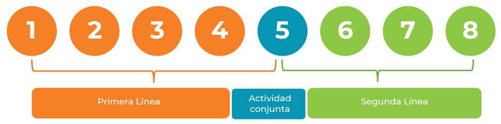

La Política Antisoborno y Anticorrupción busca integrar los elementos del Sistema de Control Interno, prevenir y gestionar eventos de soborno y corrupción, y promover los principios y valores relacionados con la ética empresarial y las políticas corporativas.
Terceras Partes Intermediarias (TPI)
Inicio
Los TPI deben entenderse como cualquier tercero, diferente a cliente o trabajador, para realizar una transacción de forma particular o periódica con el objetivo de vender los productos o servicios del Banco, o comprar bienes y/o servicios para el Banco, en calidad de agente o intermediario con agentes y/o entidades públicas como contrapartes –“government officials”.
Pasa el mouse sobre el dato de interés
Dato de interés
Pulsa los botones de la izquierda para ampliar la información.
Parámetros
Todo TPI debe atender como mínimo los siguientes parámetros por parte de las entidades:
Diligenciamiento de formatos para conocimiento del tercero.
Documentación completa para debida diligencia.
Para los TPI nivel de riesgo alto es necesario el concepto de no objeción por parte del Oficial de Cumplimiento.
Seguimiento – Monitoreo periódico.
Identificación
Para identificar un TPI, deberás obtener un SÍ como respuesta a una de las siguientes preguntas:
Pasa el mouse sobre los íconos y textos resaltados
Dato de interés
Administración
Para la administración de un TPI, se deben llevar a cabo las siguientes actividades:
Pasa el mouse sobre los íconos y textos resaltados

Actividades de seguimiento de la Segunda Línea
La Segunda Línea debe hacer un seguimiento continuo del cumplimiento de las obligaciones en materia de Riesgo de Corrupción, acompañando a los Dueños de Proceso (Primera Línea) en la identificación de riesgos y controles clave suficientes para su mitigación, y realizando las actividades que se indican en la tabla.
Actividad
Periodicidad
Preparación de matrices de riesgo y sesiones de calificación de riesgo con dueños de proceso
Semestral
Evaluación efectividad de controles (con base en la matriz de riesgos)
Semestral
Monitoreo de cuentas contables
Mensual
Señales de alerta
Mensual – Trimestral – Semestral – Anual
Atención a entes de control (Auditoría interna, Contraloría AVAL, KPMG Corporativa FCPA, entre otras)
Semestral - Anual
Implementación de actualizaciones y nuevas instrucciones
Cada vez que se presente
Monitoreo general de los componentes ABAC
Cada vez que se presente
Regalos o invitaciones
Los regalos o invitaciones permitidos a otorgar y recibir son:
Pasa el mouse sobre los textos resaltados
Artículos promocionales
Artículos en fechas especiales
Dato de interés
Instancias de aprobación
Inicio
Pasa el mouse sobre los textos resaltados
Las instancias de aprobación para otorgamiento y recepción son:
Presidente
Vicepresidentes
Gerentes
Dato de interés
Pulsa el botón para ampliar la información.
Casos especiales
Cuando se requiera la aprobación de instancias superiores se deberá:
Pasa el mouse sobre los íconos y textos resaltados
Dato de interés
Prácticas no autorizadas
Respecto a las prácticas no autorizadas, es importante tener en cuenta las siguientes consideraciones:
Actividad
Es momento de aplicar lo que has aprendido para vencer a Gerard y proteger a la jueza.
Pulsa el botón “Ir a las preguntas” para resolver algunas actividades.
IR A LAS PREGUNTAS
Los intermediarios son consultores de desarrollo del negocio, representantes de ventas, agentes aduaneros, abogados, contadores, etc., quienes normalmente son aliados locales que tienen un gran conocimiento de las costumbres y prácticas comerciales locales y una amplia red personal.
¿El tercero – proveedor es empresa del Estado*?
¿El 60 % o más de los ingresos del tercero - proveedor son por contratación estatal?
¿El proveedor - tercero tiene contratos con el Estado*?
¿Es el proveedor – tercero propiedad total o parcial, o alguno de sus integrantes de la alta gerencia o socios pertenece a alguna entidad del Estado* o es un empleado gubernamental o es pariente de algún empleado gubernamental?
¿Para el cumplimiento del objeto del contrato, el proveedor - tercero tendrá interacción de algún tipo con el sector público – Estado*, o alguna entidad o funcionario público?
Los vendors y todos los que capten o coloquen productos en nombre del Banco Popular también son TPI.
*Ten presente que la referencia al Estado incluye Sector Público, Sector Gobierno, Funcionario Público, Funcionario del Gobierno y Empresa del Sector Público.
Analizar bases de datos con el propósito de identificar la lista completa de TPI.
Identificar y categorizar los TPI, definir el tipo de relación establecida con el tercero y agrupar por tipo de servicio.
Determinar grado de exposición al riesgo corrupción: aplicar el formato “Determinación del Nivel de Riesgo TPI” para identificar el nivel de riesgo inherente de cada uno de ellos. Previo a la vinculación y la renovación del contrato con el proveedor TPI o no TPI.
Aplicar procedimientos de debida diligencia de acuerdo con el grado de riesgo de cada TPI. Como resultado de este proceso se confirmará o ajustará el nivel de riesgo del tercero.
Tomar la decisión de aceptar o rechazar la relación con el tercero.
Identificar señales de alerta.
Monitorear la relación con el TPI.
Reportar los resultados anualmente a la Vicepresidencia de Riesgo (o quien haga sus veces).
El Oficial de Cumplimiento emitirá concepto indicando la no objeción de la viabilidad de la vinculación de un TPI de nivel de riesgo alto y sus condicionamientos.
Navidad, Día del Amor y la Amistad, Día de la Mujer, Día de la Secretaria, Día del Niño, entre otros.
No podrá superar el 0,5 % del valor del salario mensual del trabajador que lo recibe, y sin que dicho monto supere 2 SMMLV. En caso que supere los límites anteriores deberá solicitarse la aprobación de acuerdo con la Tabla de atribuciones para aprobaciones en el otorgamiento de regalos o invitaciones.
El presidente, quien haga sus veces o quienes este delegue podrán aprobar: Regalo o invitación superior a 4 SMMLV
Los vicepresidentes, quienes hagan sus veces o quienes estos deleguen podrán aprobar: Regalo o invitación entre 2 y 4 SMMLV
Los gerentes o quienes hagan sus veces podrán aprobar: Regalo o invitación entre 0,5 y hasta 2 SMMLV
El reembolso de gastos por bebidas alcohólicas deberá ser aprobado por el jefe inmediato, por quien haga sus veces o por quien cada entidad designe, y, por lo menos, deberá cumplir con las políticas de reembolso de gastos por este concepto y asegurando la proporcionalidad del gasto.
Si el reembolso es solicitado por la Presidencia, será autorizado por la Vicepresidencia Financiera.
Diligenciar los formatos Solicitud para otorgar o recibir regalos e invitaciones y Cierre Recibo y Otorgamiento de Regalos e Invitaciones, y junto con su aprobación entregarlos a la Dirección ABAC para emisión de concepto.
Reportar en la Bitácora de registro, publicada en la página de Enlace Virtual.
Si se recibe un regalo o invitación a un familiar del trabajador o si el regalo llega al lugar del domicilio del trabajador también deberá ser reportado en la Bitácora.
Queda expresamente prohibido utilizar figuras como publicidad, pago de eventos a favor de terceros, comodatos, regalos, invitaciones, patrocinios y/o donaciones como parte de las reciprocidades con clientes.
Programas de fidelización no se consideran reciprocidades y deberán cumplir con los mínimos requeridos desde el punto de vista NIIF para su registro como tal.
El ofrecimiento de beneficios a clientes debe estar soportado y documentado en un análisis de relación costo/beneficio, de cara al portafolio completo del cliente. Si el retorno realizado con un cliente se desfasa por debajo de la media esperada, se debe contar con autorización expresa de la instancia superior que corresponda.
Está prohibido que el Banco Popular y sus filiales realicen comodatos a clientes o proveedores. Si por alguna consideración excepcional contractual se hace necesario otorgar bienes bajo esta figura, todos, sin excepción y de manera individual, deben ser previamente autorizados por la Gerencia de Cumplimiento – Dirección ABAC, basados en documentación robusta de cada operación suministrada por la primera línea de defensa a cargo de dicha transacción.